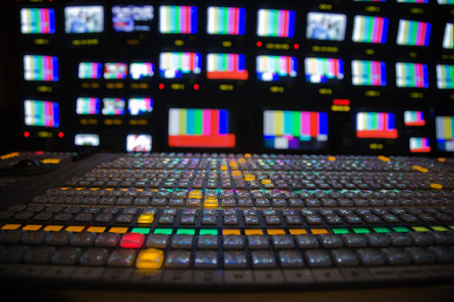
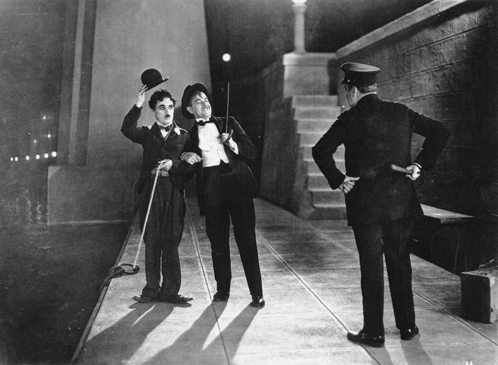
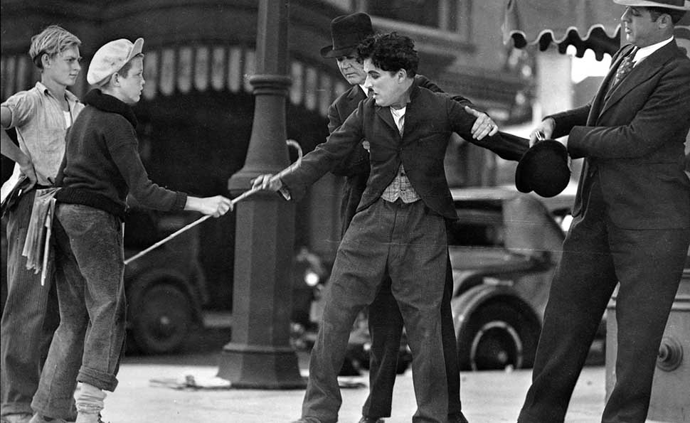
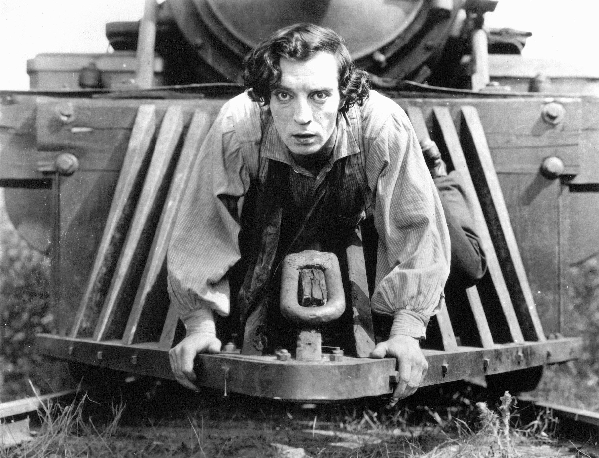

One thing we hear all the time in film discussion and theory is the overwhelming importance of sound. Film as we know it is a visual medium, as well as an auditory one.
You may be thinking that this hasn’t always been the case. What about the silent era? For the first few decades of cinema, sound couldn’t have been a factor. Think back to the films of Charlie Chaplin, Buster Keaton, and so on.
  But with the absence of dialogue and sound effects, filmmakers of this era still relied on some element of sound to help tell their story. And that element was primarily music. Take for example this clip from Charlie Chaplin’s City Lights. Notice how music compliments the visuals and helps set the tone.
Take a look at this clip from Blade Runner. As you’re watching, listen very closely to the sound design. Then in the box below, list all the different sounds in this scene that stood out to you.
List all the sounds you heard in this clip. How did these sounds change your experience of the scene?
Nearly all the sounds you heard in that clip, with the exception of the dialogue, were not captured on set during filming. The scene could have very easily just been two people talking to each other in a silent room.
Instead, the sound design lets the audience become more immersed in this science fiction world, a world much larger than this one room.
It’s very common for sound design to incorporate sounds that are not captured on the day of the shoot. There are entire “libraries” of prerecorded sound effects that most Hollywood productions share and utilize.
(Think of how you’ve probably recognized the exact same explosion sound effect in 10 different movies, or a knife being drawn, pistol being cocked, a punch, etc.)
Although many new sound effects are created in a foley studio, by someone who’s job it is to artificially create sounds we’re familiar with. This job is the foley artist.
What about sound that is captured on set? Usually, it’s better to minimize as much sound as possible in the shoot (other than dialogue) and let the sound designer do their work later. Here’s some examples of how a prop master accomplishes this.
(Really just the first minute of this clip discusses sound, but I recommend the rest of the video if you’re curious about the other cool work prop masters do)
Consider this: If you’re shooting a film, what are some other things (props or otherwise) that might make too much unwanted noise in your shot? Can you think of any good solutions?
More sound effects doesn’t always mean better. Sometimes good sound design can be in what doesn’t make a sound, but realistically would. Great sound design isn’t about copying reality, it’s about creating the best reality for world of the film.
The film “A Quiet Place” is famous for being about people staying as silent as possible. This has prompted many jokes online about the film being easy to sound design for. But I feel that the sound design in this film is among the most impressive I have ever seen.
Every sound you do hear, no matter how close to complete silence, is an intentional choice on the part of the filmmakers to increase the suspense.
What didn't you hear in this clip that you probably would have heard in real life?
Finally, I’d like to point out that great sound design is present in media beyond filmmaking.
I’m a big fan of the podcast “Mission to Zyxx”. It is a fully improvised comedy/science-fiction audio series. Not only is it very funny and engaging, but they put countless hours into their sound design to create entire immersive worlds using only audio.
I strongly recommend you check the show out. Here is a link to their pilot episode (about 4 minutes long)